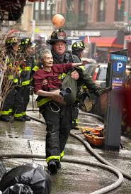
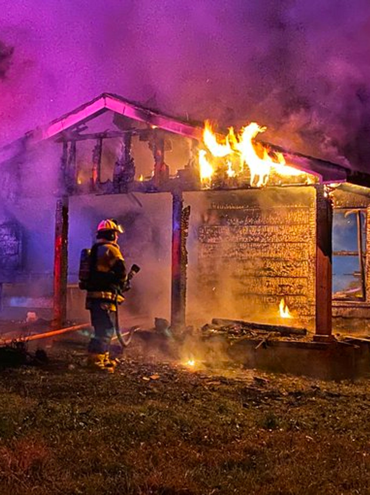

Life-saving alerts
Citizen is a force for good in the world.

Man Rescued from Chinatown Fire

Lost Dog Returned to Owner

Family Escapes Burning Building
Missing 10-Year-Old Girl Found
Uber Driver Saved from Shootout
Because Citizen alerted me about a medical emergency near the hospital where I work, I was able to prepare an operating room more than 20 minutes before EMS called us about the patient. We saved his life because we had that extra time from Citizen. Those minutes matter.
Nicole M., San Francisco user since 2017